Chapter 5 Worked normalization examples
We will demonstrate exploratory normalization steps on the expression datasets.
5.2 load Some data
Raw table preview
library(readr)
safe_read <- function(file) {
# First attempt: read as TSV
df <- tryCatch(
readr::read_tsv(file, show_col_types = FALSE),
error = function(e) NULL # catch fatal errors
)
# If read_tsv failed entirely:
if (is.null(df)) {
message("TSV read failed — reading as space-delimited file instead.")
return(readr::read_table(file, show_col_types = FALSE))
}
# If read_tsv returned but with parsing issues:
probs <- problems(df)
if (nrow(probs) > 0) {
message("Parsing issues detected in TSV — reading as space-delimited file instead.")
return(readr::read_table(file, show_col_types = FALSE))
}
# If everything was fine:
return(df)
}
x <- safe_read(files[1])
kable_head(x[, 1:min(6, ncol(x))], 5, paste(gse,": raw table preview"))| Gene | T8657_900CTG_NT | T8658_1150CTG_NT | T8659_1450CTG_NT | T8660_900CTG_20CTG | T8661_1150CTG_20CTG |
|---|---|---|---|---|---|
| ENSG00000108821 | 456397 | 486088 | 608151 | 2012962 | 379186 |
| ENSG00000265150 | 170681 | 299425 | 286295 | 747000 | 210962 |
| ENSG00000164692 | 169781 | 190854 | 263391 | 869194 | 180006 |
| ENSG00000265735 | 78113 | 121697 | 113379 | 532435 | 112977 |
| ENSG00000259001 | 55081 | 78811 | 73032 | 353442 | 100823 |
5.3 Example 1: GSE119732
Before doing anything to this data. What does it look like?
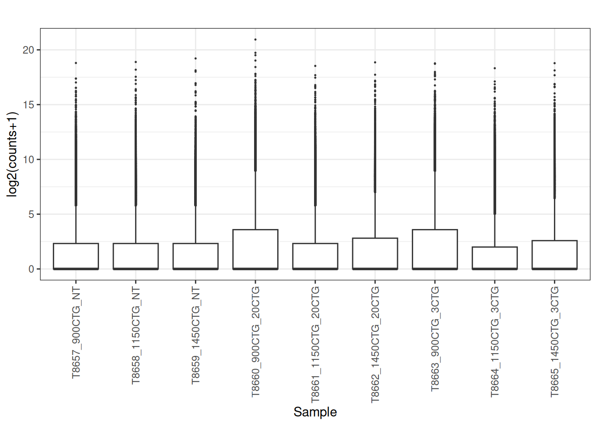
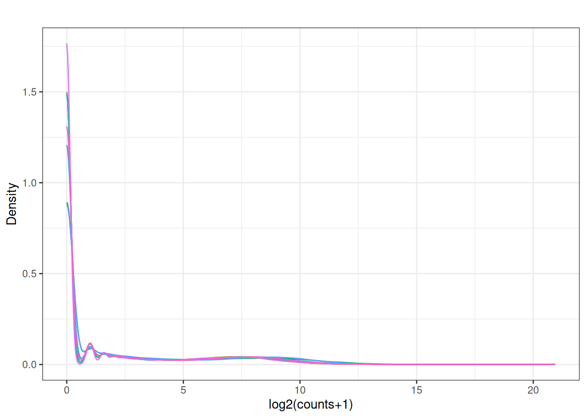
5.4 Convert the raw counts to Counts per million (CPM)
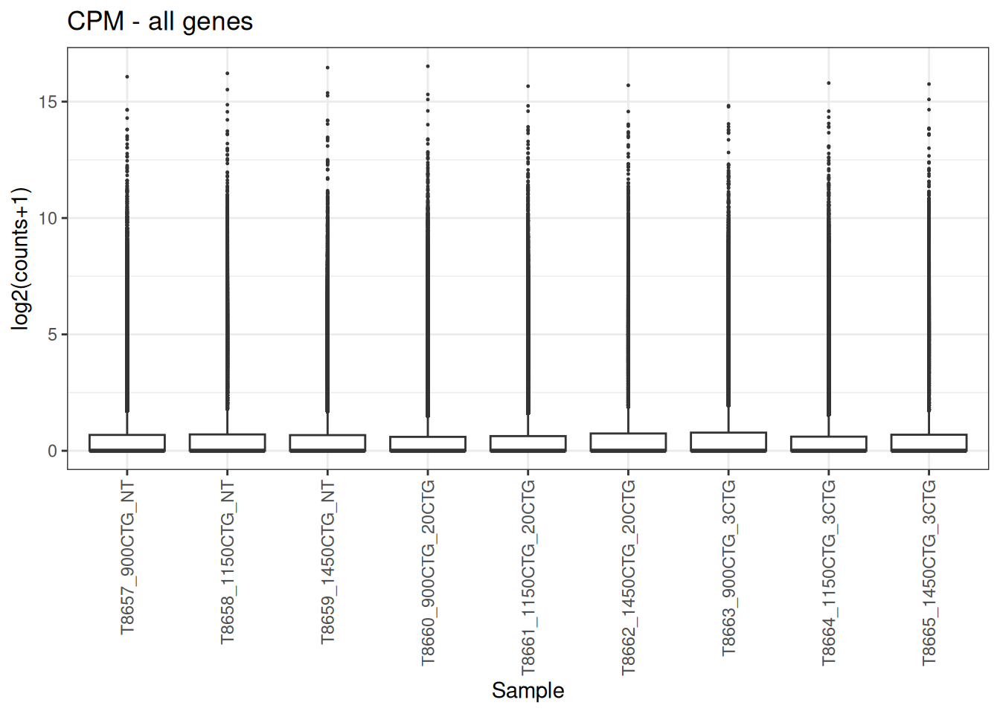
Visualize as a density plot as well
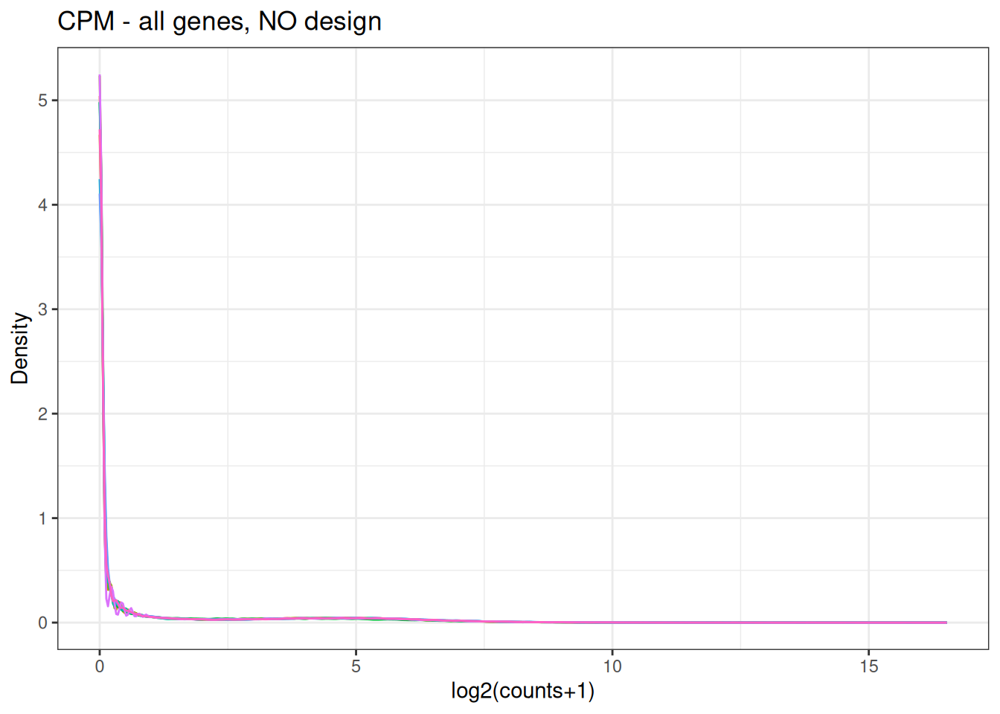
There are a lot of genes that have zero expression. That is the majority of them. So we need to get rid of them.
5.5 filter out lowly expressed genes
to_remove <- edgeR::filterByExpr(x_cpm,min.count = 3)
x_cpm_filtered <- x_cpm[to_remove,]
plot_box(x_cpm_filtered,main = "CPM filtered out lowly expressed - \nNO design matrix")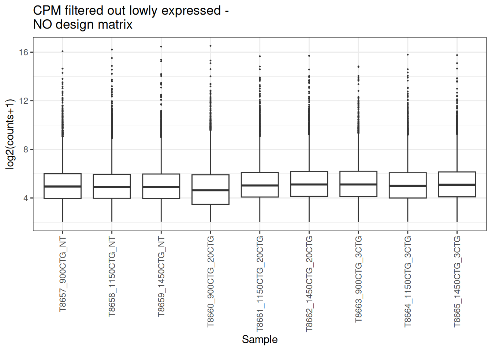
visualize this as density plot as well.
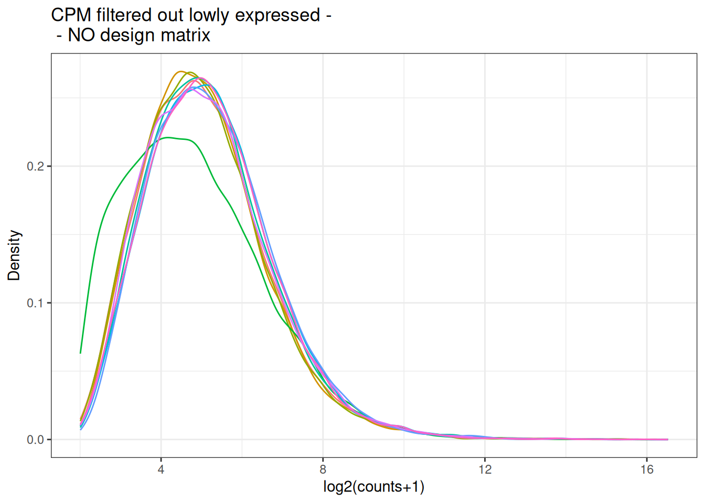
5.6 Incorporate a design matrix - description of the samples.
The above was usingn all of the samples the same but this dataset has varying sample types. I might be hard to figure it out just from column names as they are not so informative but let’s just guess
## [1] "Gene" "T8657_900CTG_NT" "T8658_1150CTG_NT"
## [4] "T8659_1450CTG_NT" "T8660_900CTG_20CTG" "T8661_1150CTG_20CTG"
## [7] "T8662_1450CTG_20CTG" "T8663_900CTG_3CTG" "T8664_1150CTG_3CTG"
## [10] "T8665_1450CTG_3CTG"#design matrix -
samples <- colnames(x)[2:ncol(x)]
patient <- unlist(lapply(samples,FUN = function(x){unlist(strsplit(x,split = "_"))[2]}))
celltype <- unlist(lapply(samples,FUN = function(x){unlist(strsplit(x,split = "_"))[3]}))
sample_data <- data.frame(samples, patient, celltype)
design <- model.matrix(~ 0 + celltype,data = sample_data)
rownames(design) <- sample_data$samples
colnames(design) <- paste0("celltype", levels(factor(celltype)))
design## celltype20CTG celltype3CTG celltypeNT
## T8657_900CTG_NT 0 0 1
## T8658_1150CTG_NT 0 0 1
## T8659_1450CTG_NT 0 0 1
## T8660_900CTG_20CTG 1 0 0
## T8661_1150CTG_20CTG 1 0 0
## T8662_1450CTG_20CTG 1 0 0
## T8663_900CTG_3CTG 0 1 0
## T8664_1150CTG_3CTG 0 1 0
## T8665_1450CTG_3CTG 0 1 0
## attr(,"assign")
## [1] 1 1 1
## attr(,"contrasts")
## attr(,"contrasts")$celltype
## [1] "contr.treatment"Filter use design information
to_remove_withdesign <- edgeR::filterByExpr(x_cpm,
min.count = 3,
design = design)
x_cpm_filtered_withdesign <- x_cpm[to_remove_withdesign,]
colnames(x_cpm_filtered_withdesign ) <- paste(sample_data$celltype,
1:nrow(sample_data),sep = "_")
plot_box(x_cpm_filtered_withdesign,
main = "CPM filtered out lowly expressed - \n - with design matrix")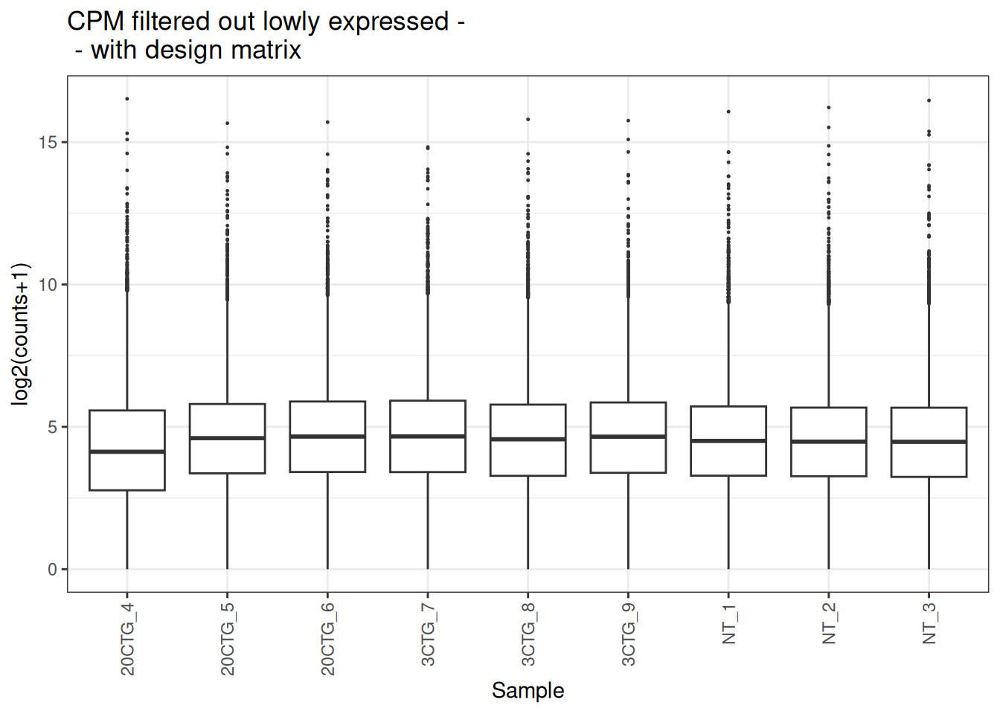
plot_density(x_cpm_filtered_withdesign,main = "CPM filtered out lowly expressed - \n - with design matrix")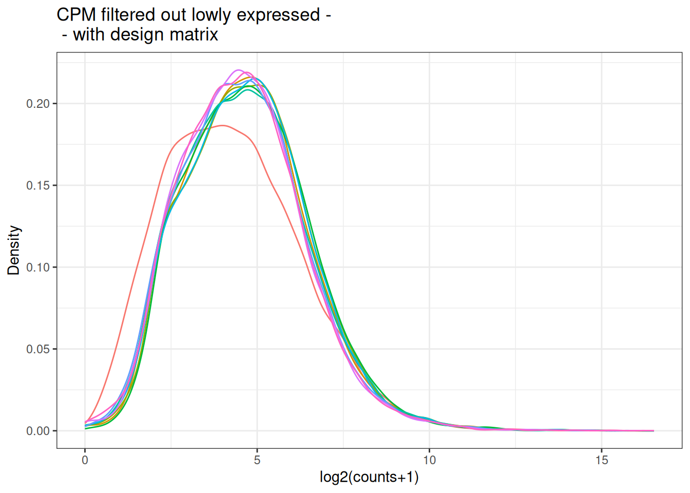
5.7 Normalize Dataset using TMM
library(edgeR)
dge <- DGEList(counts = x[,2:ncol(x)])
dge_filtered <- dge[filterByExpr(dge),]
dge_filtered <- calcNormFactors(dge_filtered , method = "TMM")
norm_cpm <- cpm(dge_filtered , log = FALSE, prior.count = 1)
plot_box(norm_cpm)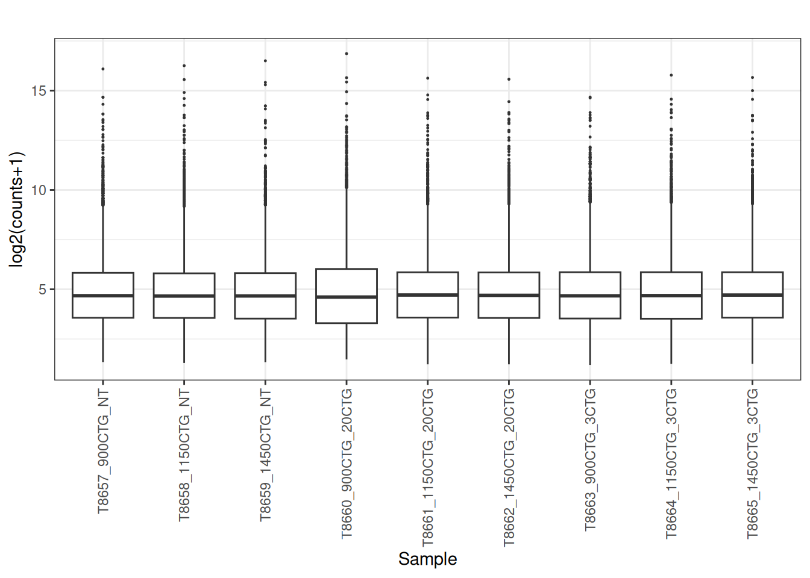
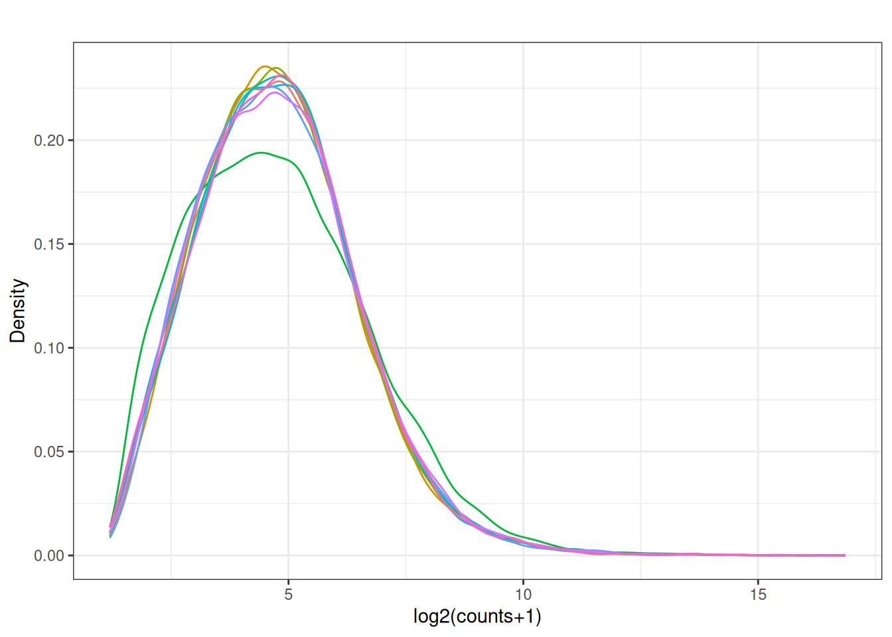
5.8 Look at the distribution of our samples in 2D space
y <- dge_filtered
plotMDS(y, top = 500, labels = colnames(y),
col = as.integer(y$samples$group))
legend("topright", legend = levels(y$samples$group),
col = seq_along(levels(y$samples$group)), pch = 16, bty = "n")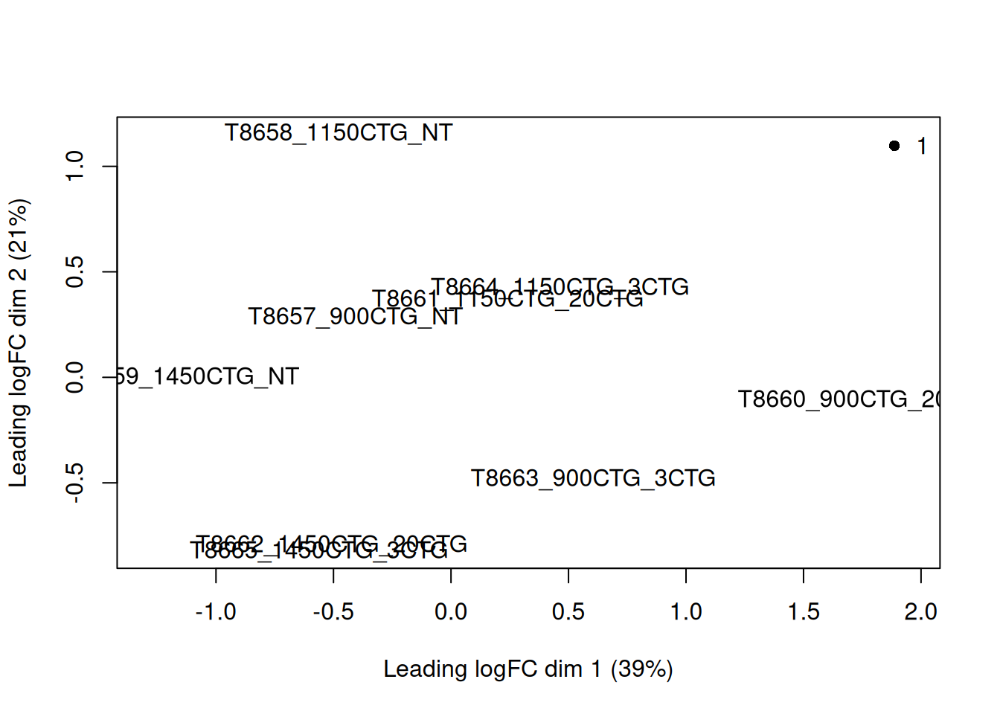
Now incorporate the design into the process
dge <- DGEList(counts = x[,2:ncol(x)],group = sample_data$celltype)
dge_filtered <- dge[filterByExpr(dge),]
dge_filtered <- calcNormFactors(dge_filtered , method = "TMM")
norm_cpm <- cpm(dge_filtered , log = FALSE, prior.count = 1)
plot_box(norm_cpm)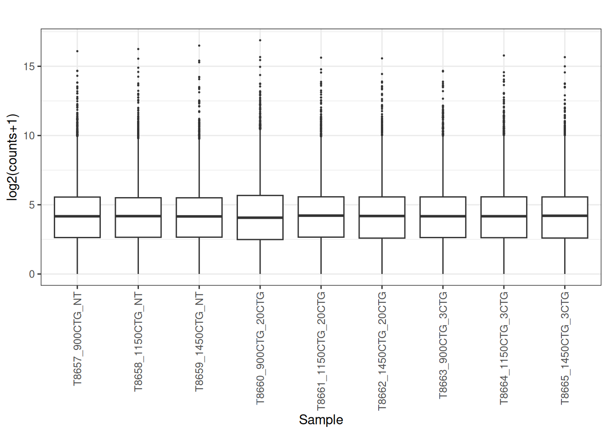

y <- dge_filtered
plotMDS(y, top = 500, labels = sample_data$celltype,#colnames(y),
col = as.integer(y$samples$group))
legend("topright", legend = levels(y$samples$group),
col = seq_along(levels(y$samples$group)), pch = 16, bty = "n")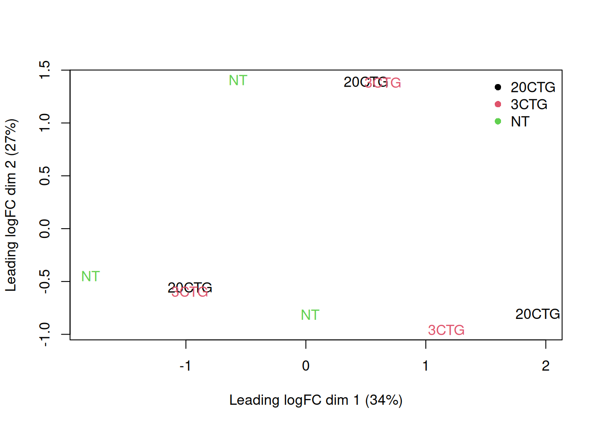
Now incorporate the design into the process
dge <- DGEList(counts = x[,2:ncol(x)],group = sample_data$patient)
dge_filtered <- dge[filterByExpr(dge),]
dge_filtered <- calcNormFactors(dge_filtered , method = "TMM")
norm_cpm <- cpm(dge_filtered , log = FALSE, prior.count = 1)
plot_box(norm_cpm)
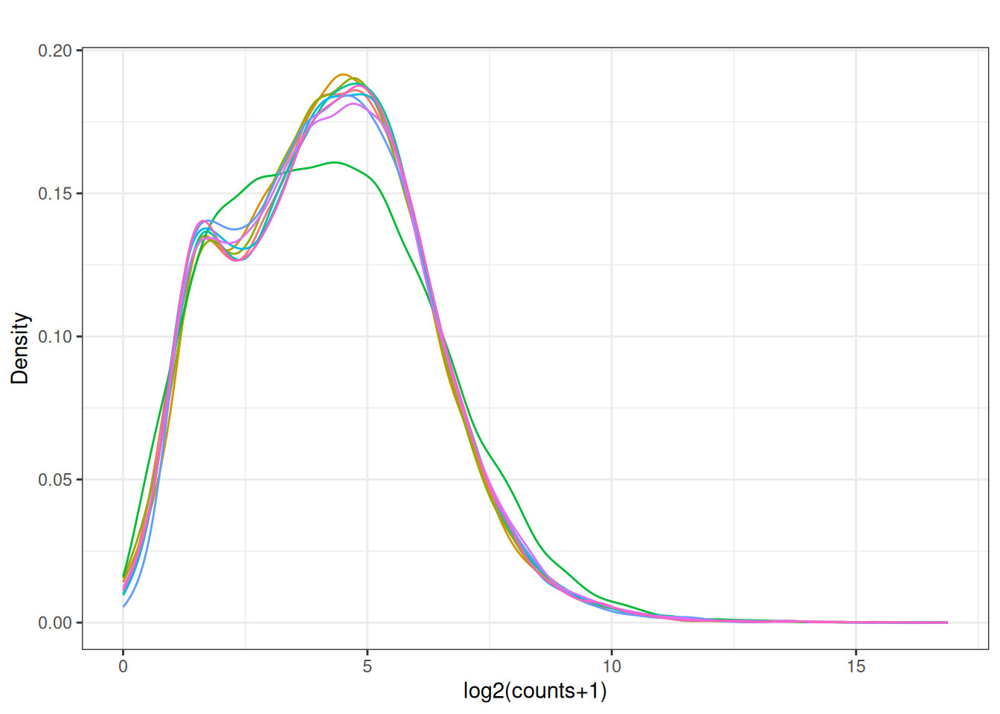
y <- dge_filtered
plotMDS(y, top = 500, labels = sample_data$patient,# colnames(y),
col = as.integer(y$samples$group))
legend("topright", legend = levels(y$samples$group),
col = seq_along(levels(y$samples$group)), pch = 16, bty = "n")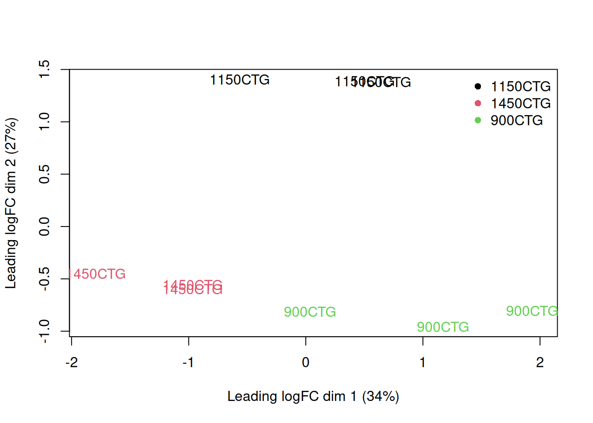
5.9 Normalize the Dataset using RLE
library(DESeq2)
counts <- x[,2:ncol(x)]
keep <- rowSums(counts >= 10) >= 2
counts_filtered <- counts[keep, ]
dds <- DESeqDataSetFromMatrix(countData = counts_filtered,
colData = sample_data,
design = design)
dds <- estimateSizeFactors(dds)
norm_counts <- counts(dds, normalized = TRUE)
plot_box(norm_counts)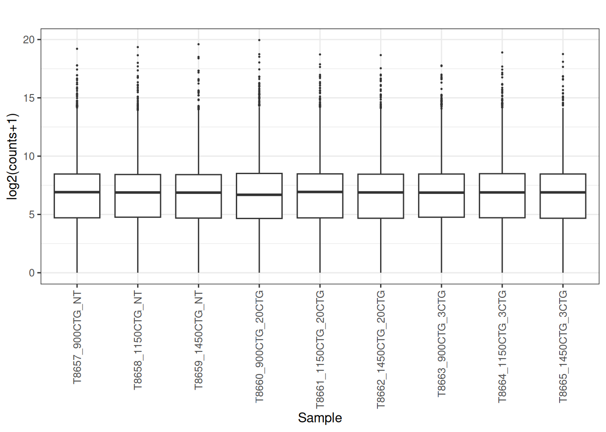
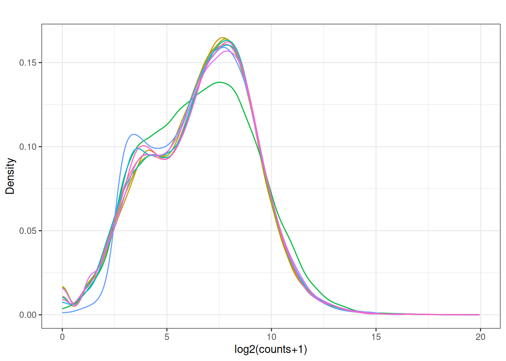